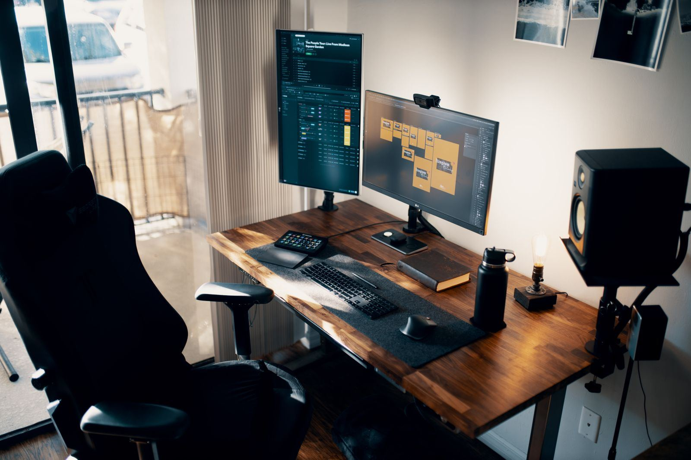

Best Monitor Arms (2026): Weight Range, Screen Size & Warranty Compared
A monitor arm lets you put the top of your screen at eye level, pull it closer or push it away, and free up desk space. The specs that decide whether an arm works are its weight range (both the minimum and the maximum), the screen size it's rated for, and whether your monitor's mounting holes match. We compared five popular arms on those numbers, using manufacturer specs and independent reviews.
Quick picks
| Product | Best for | |
|---|---|---|
| Ergotron LX Desk Mount | Best overall single arm | Check price |
| HUANUO FlowLift Single Monitor Arm | Best budget single arm | Check price |
| HUANUO FlowLift Dual Monitor Stand | Best budget dual arm | Check price |
| Ergotron HX Desk Mount | Heavy and ultrawide monitors | Check price |
| VIVO Dual Monitor Desk Mount (STAND-V002) | Cheapest way to raise two screens | Check price |
How to choose
1. Weigh your monitor without its stand
Look up the monitor's weight without the stand on its spec sheet. It must fall inside the arm's range. Gas-spring arms have a minimum as well as a maximum: a screen lighter than the minimum drifts up, and one heavier than the maximum sags.
2. Check the VESA pattern
All the arms here fit 75 × 75 mm and 100 × 100 mm hole patterns. Some monitors, including certain Apple and deeply curved models, need an adapter, so check before you order.
3. Know your target height
Our calculator estimates your seated eye height. The top of your screen should end up at or slightly below it, so make sure the arm can lift your screen that high above the desk.
4. Check your desk edge
Clamp mounts need clearance behind the desk and a solid edge. Thin, glass or particleboard desks may need a reinforcement plate. A grommet mount uses an existing cable hole instead.
5. Big curved screens need a heavy-duty arm
Large curved monitors are heavy and deep, which reduces an arm's effective capacity. Ergotron notes that displays deeper than 6 in can affect the HX's rating, and the Samsung Odyssey G9 needs its heavy-duty pivot.
6. Warranty
Warranties here range from 3 years (VIVO) to 10 years (Ergotron). Gas springs are the part that wears, so a longer warranty matters more on an arm you'll move every day.
Specs side by side
| Product | Monitor weight | Screen size | VESA | Warranty | Price tier |
|---|---|---|---|---|---|
| Ergotron LX Desk Mount | 7–25 lb (3.2–11.3 kg) | Up to 34 in | 75 × 75, 100 × 100 | 10 years | Premium |
| HUANUO FlowLift Single Monitor Arm | 4.4–19.8 lb | 13–32 in | 75 × 75, 100 × 100 | 5 years | Budget |
| HUANUO FlowLift Dual Monitor Stand | 4.4–19.8 lb per arm | 13–32 in | 75 × 75, 100 × 100 | 5 years | Budget |
| Ergotron HX Desk Mount | 20–42 lb (9.1–19.1 kg) | Up to 49 in | 75 × 75, 100 × 100 | 10 years | Premium |
| VIVO Dual Monitor Desk Mount (STAND-V002) | Up to 22 lb per arm | 13–30 in | 75 × 75, 100 × 100 | 3 years | Budget |
From manufacturer pages, manuals and Amazon listings; see the sources under each arm. Weight ranges are per arm. Confirm the exact model on the listing.
The shortlist
Best overall single arm
1. Ergotron LX Desk Mount
The LX is the arm most often recommended for good reason: smooth movement, a long reach and lift, and a 10-year warranty from a company that specializes in mounts. It handles most monitors up to 34 in, including lighter ultrawides, and costs several times more than budget arms.
What we like
- Smooth, stable movement
- 10-year warranty
- Clamp and grommet mounts included
Trade-offs
- Several times the price of budget arms
- Not rated for heavy 49 in ultrawides
What other reviewers found
Skip it if: Your monitor is over 25 lb or a large curved ultrawide.
Check Ergotron LX Desk Mount on Amazon →Spec sources (checked Nov 2, 2026): Ergotron LX spec (B&H), Ergotron warranty terms
Best budget single arm
2. HUANUO FlowLift Single Monitor Arm
The FlowLift (model HNSS6) is one of the best-selling monitor arms on Amazon, a gas-spring arm for 13–32 in screens at a fraction of the Ergotron's price, with a 5-year warranty. Reviewers rate it an upgrade that genuinely works. Heavy 32 in curved monitors can be near its limit.
What we like
- Very low price
- Gas-spring height adjustment
- Clamp and grommet options
Trade-offs
- Heavier 32 in curved monitors can be borderline
- Less refined movement than Ergotron
What other reviewers found
Skip it if: Your monitor is near 20 lb or deeply curved.
Check HUANUO FlowLift Single Monitor Arm on Amazon →Spec sources (checked Nov 2, 2026): HUANUO HNSS6 page
Best budget dual arm
3. HUANUO FlowLift Dual Monitor Stand
The dual version of the FlowLift (model HNDS6) puts two gas-spring arms on one clamp. It's one of Amazon's best-selling monitor mounts and the simplest way to float two matching 13–32 in screens. Each arm has the same 4.4–19.8 lb range, so two very different monitors can be awkward to balance.
What we like
- One clamp for two screens
- Low price for two gas-spring arms
- Independent adjustment for each screen
Trade-offs
- Best with two similar monitors
- Heavier screens near 20 lb reach the limit
What other reviewers found
- ocdevel: lists the FlowLift Dual (HNDS6) as its budget dual-arm pick.
Skip it if: Your two monitors are very different sizes or weights.
Check HUANUO FlowLift Dual Monitor Stand on Amazon →Spec sources (checked Nov 2, 2026): HUANUO single monitor mounts
Heavy and ultrawide monitors
4. Ergotron HX Desk Mount
Built for big, heavy screens, including 49 in super-ultrawides, with a 10-year warranty. It's the arm to look at if you own one of the monitors in our ultrawide monitor guide. Note the minimum: monitors under 20 lb are too light for it.
What we like
- Handles heavy ultrawides
- 10-year warranty
- Tilt and swivel for large screens
Trade-offs
- Too strong for light monitors (20 lb minimum)
- Very deep curved screens may need Ergotron's heavy-duty pivot
What other reviewers found
Skip it if: Your monitor weighs under 20 lb.
Check Ergotron HX Desk Mount on Amazon →Spec sources (checked Nov 2, 2026): Ergotron HX spec (Markertek), Ergotron warranty terms
Cheapest way to raise two screens
5. VIVO Dual Monitor Desk Mount (STAND-V002)
A pole mount with two tilting, swiveling arms for screens up to 30 in and 22 lb each, at a very low price. Height is set with a collar on the pole rather than gas springs, so it suits screens you set once and leave. We didn't find an independent review; owner feedback on retail listings mentions easy setup, with some reports of the height collar slipping under heavier monitors.
What we like
- Very low price for two screens
- Simple, sturdy steel pole
- Clamp or grommet base
Trade-offs
- Height set with a collar, not one-handed
- No independent review found
Skip it if: You move your screens around during the day.
Check VIVO Dual Monitor Desk Mount (STAND-V002) on Amazon →Spec sources (checked Nov 2, 2026): VIVO STAND-V002 manual
Why some arms aren't here
Earlier versions of this guide included the Ergotron LX Dual and the VIVO STAND-V001. We swapped them for the HUANUO FlowLift Dual and the VIVO STAND-V002, which are far more widely bought on Amazon US and have clearly listed specs. Cheap unbranded arms with big review counts were left out when we couldn't find a manufacturer spec page to check their weight range.
FAQ
How high should my monitor be?
The top of the screen should sit at or slightly below eye level, about an arm's length away. Our calculator estimates your seated eye height from your body height.
Will a monitor arm damage my desk?
On a solid desk, no. Thin, glass or particleboard desktops can crack or dent under a clamp; a steel reinforcement plate spreads the load.
My monitor has no VESA holes. Can I still use an arm?
Often yes, with a VESA adapter bracket made for your monitor size. Check that the adapter's weight rating covers your monitor.
Do monitor arms work on standing desks?
Yes. Leave enough cable slack for the full height range, and count the monitor and arm weight toward your desk's lift capacity.
Why does my monitor drift up or sag on a gas-spring arm?
Either the monitor is outside the arm's weight range, or the spring tension isn't set for it. Adjust the tension screw first; if it still won't hold, the arm isn't rated for your monitor's weight.